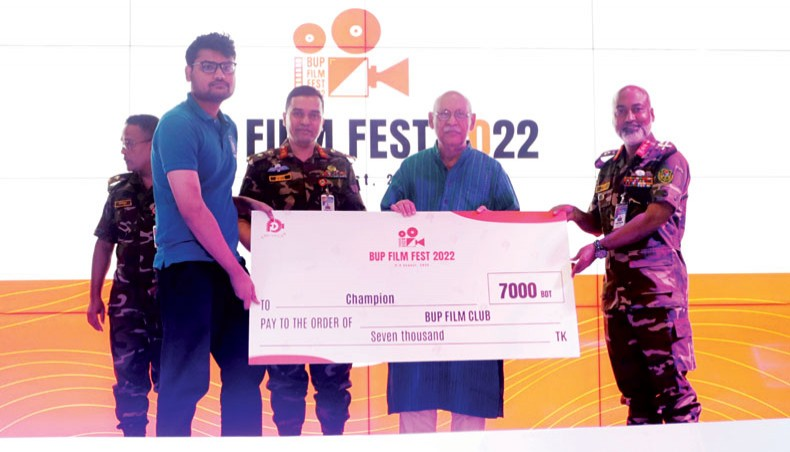

Hey thereeeee! Since you have stumbled onto this page, please note that this isn't about my professional or academic CS profile. This is more about my other interests and hobbies.
If you're not looking for that, feel free to use the navbar to go back to the more technical part of the website! See ya!
Former member of the Adamjee Cantonment Public School Quiz Team in the Nationals (BTV 2018), and of Notre Dame College - Crimson, specializing in history, geography, and literature. I love to write, both fiction and non-fiction, with my major influences being Fydor Dostoevsky, Ursula K. L. Guin and Franz Kafka. I have published several articles for the now defunct Online Magazine, The Dhaka Apologue, as well as for the international news portal The Business Standard.
If you wish to read or explore any of my works, please do not hesitate to contact me!
Though not an exhaustive list, these include some of the non-fiction literary works I'm most proud of.
A news report on how the newly inaugurated Dhaka Expressway will likely increase congestion in the long run.
An essay on the geopolitical history of Bangladesh and its state apparatus, separating its history into six distinct phases, namely: The War (1971), The Two Revolutions (1971–1975), The Coups (1975–1981), The Strong Man (1981–1990), Demokratizatsiya (1990–2006), and The New Order (2006–2024).
A sociological exploration of the othering of disenfranchised minority groups and their societal perception by the majority.
An exploration of the metaethics of group-think, and how outliers are targetted for being a perceived threat to social order.
A satire that critiques common talking points of pro-capitalist mouthpieces by imitating the vernacular of the ones defending it.
A short story exploring the cyclical recurrence of history through the rise and fall of empires, inspired by the eponymous poem by Percy Bysshe Shelley.
An amateur epistolary novella set in the fictional setting of the Two Realms, mostly consisting of in-universe encyclopedia entries and other official documents. The main story follows a young mage navigating the socio-political hurdles of the setting. The themes can be described as a mixture of cyberpunk, arcanepunk, high-fantasy, historical fiction, and social commentary. ~60k words
A play in two acts set during the war of 1971, following a squad of West Pakistani soldiers. The themes are the banality of evil, and the densensitization towards violence. It was voted the best script in a national film fest in 2022. ~3.5k words
A philosophical short in three parts that explores the themes of depression, loss, and isolation. It features the heavy usuage of allegories to represent the internal machinations of the mind. This story has been awarded several accolades since 2020.~2.5k words
A short story, thematically simillar to both found footage and psychological horror, that follows a disgruntled survivor in post-apocalyptic Dhaka after a zombie outbreak. This story was also awarded multiple times between 2020-2021. ~2k words
Notable achievements and recognitions spanning 2018 – 2022. These are mostly from high-school.